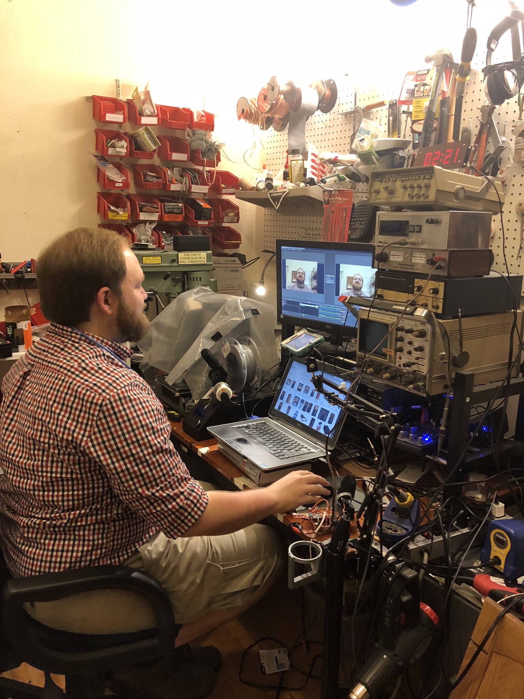
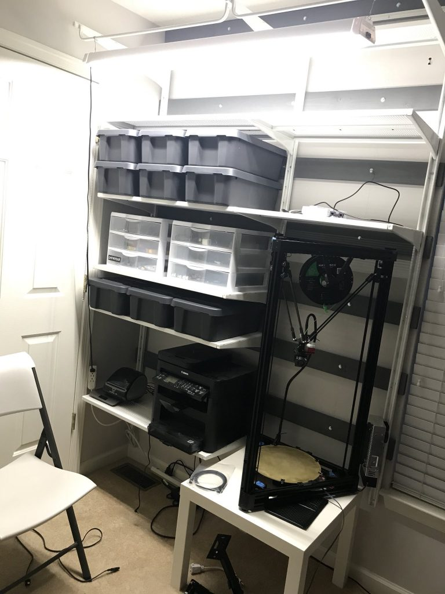
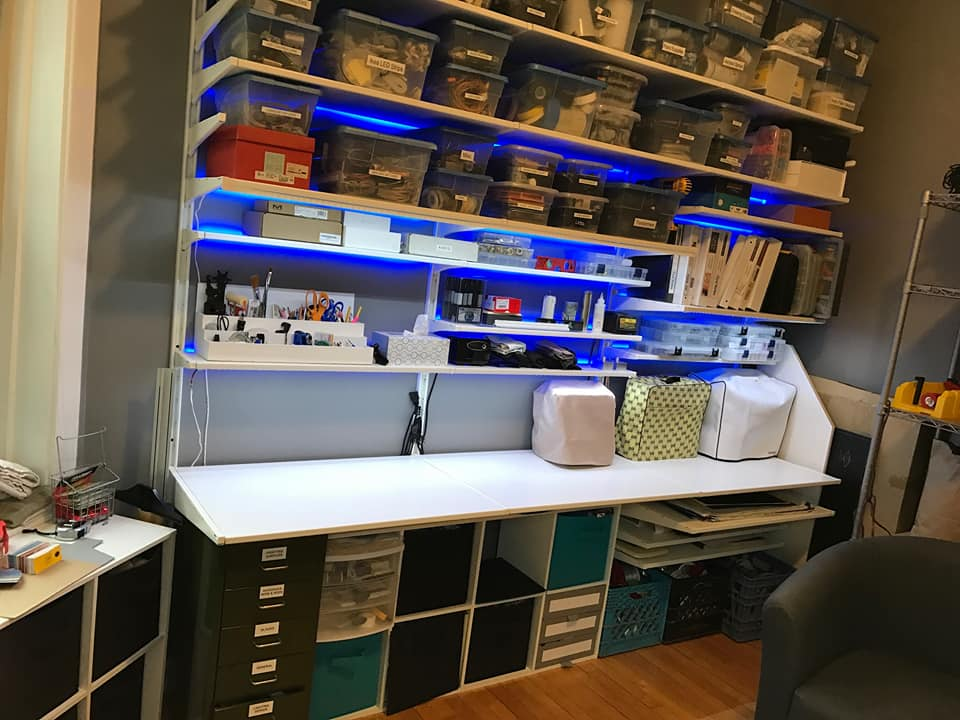
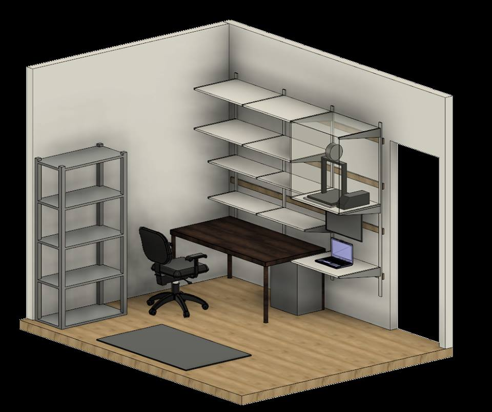
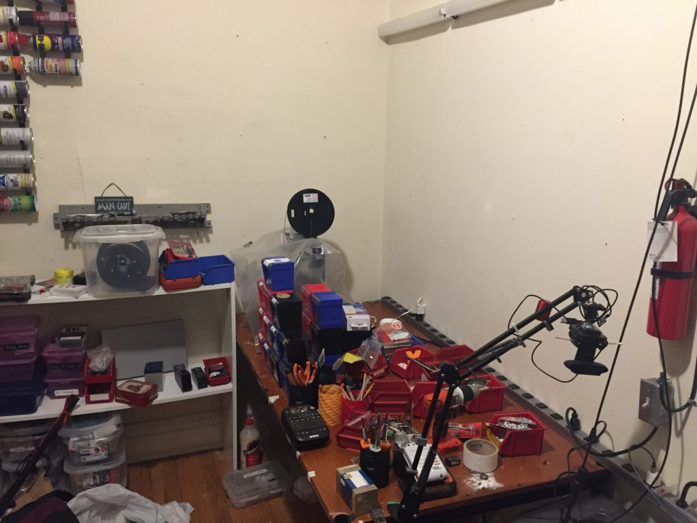
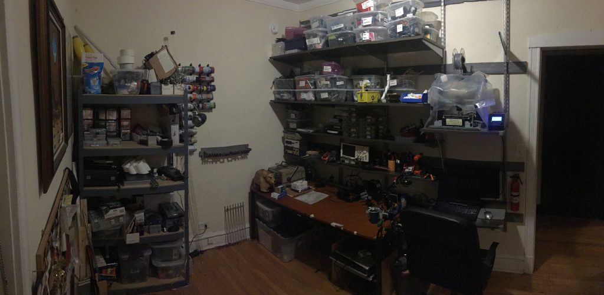

Home Office Overhaul
You may get the impression from this blog that I like to dabble in a lot of different projects. You're not wrong - I love trying new hobbies, new technologies, new recipies, new stuff. But one of the issues is that the old projects (and the pieces and tools that come with them) tend to pile up in my workspace. So with a kindly nudge from my partner, I decided it was time to overhaul my home office setup.
I wish I had taken a better series of before-during-after photos, but this photo that my partner took of me in the Fall certainly conveys the depths of the clutter of my old setup. It wasn't always this bad... but sometimes it was:

The workspace in september, such as it was.
There were many inconveniences with this setup, but the chief one was a lack of actual open flat work area. This was mostly a result of:
- The 3D Printer sitting on the desktop (and its control box)
- The stack of test gear (oscilloscope, PSUs, SigGen) and my FT-767gx radio sitting in prime working area
- This is/was my primary computer workspace as well, so any project that necessitated having a laptop on the desk meant almost no workspace leftover.
Additionally, a lot of the organizational systems that I had going were leftovers from days gone by, when I was doing more carpentry/assembly as part of a freelance career. The pegboard of hand tools, for example. But these days, while I'm glad I own, say, a carpenter's square and a hammer, I only use them at home every 3-6 months. Removing the pegboard and the red pick bins you see in the photo above freed up valuable wall space. All my "carpentry" tools live in one large bin tucked underneath the desk.
I took inspiration from a couple of creative-types in my sphere: Jeremy KF7IJZ, ham radio nerd and one of the producers of the Ham Radio Workbench podcast; and Lee Fiskness, a fellow stage lighting colleague. Both have redone their home workspaces in the past couple years, and I know both pursue a variety of hobbies in relatively confined space.

1/2 of Jeremy's setup, using ventilated wire shelving and a variety of bins. His desk sits to the right of this.

Lee's desk setup. I'm amazed by the density of storage on this thing! Also, Lee being a lighting person, no surprise that there's tasteful lighting built in.
While both Jeremy and Lee used the Algot System from Ikea, I ended up going with the Container Store's version of wall-mounted shelves called ELFA. The primary reason for this is that it seems ELFA may be getting phased out - many of the specific components (metal shelves, certain size brackets) are no longer available. Additionally, ELFA's two-slot metal vertical standards are compatible with lots of other generic brands (Rubbermaid, Closetmaid, Home Depot, Menards, etc.), and seemed more easy to create customized pieces for than Algot's slotted-tab connectors.
Here's the design I came up with, laid out in Fusion360:

I had originally intended to use Algot as well, so the specific shelf widths and vertical supports don't quite align with the final ELFA design.
This makes use of my existing metal shelves and 72"x30" desktop. The grey square on the floor represents the footprint of our elliptical, which also typically lives in this room.
The first step was to Marie Kondo the crap out of setup. I've tossed, condensed, consolidated so many things that I no longer needed, or that someone else who have better use for. I also purchased a bunch more plastic bins and part boxes, to try to break things down into manageable storage sizes.

About halfway through the clean. No more pegboard!
After a few weeks of cleaning and clearing, I went to the container store this weekend and picked up the major pieces for the shelving. The consultants at the ELFA counter are really expecting folks to walk in with not much of an idea of what they need to fill out their closet - I think they were surprised when I had a parts list and a drafting. But my consultant, who's also a math teach, was a great help, and got me squared away in about 20 minutes. I did have to come back later in the week to pick up all the pieces, I think mostly because the store was slammed with patrons getting in on the ELFA sale.
The ELFA system is pretty straightforward - everything hangs off of dual-slot vertical "standards". There are two types of standards - those that hang purely off a top rail, and those that don't hang off a top rail but instead mount to the wall every 16" vertically or so. I went with the first type, but being concerned about weight, I didn't trust the Container Store's claim that everything could just be hung from drywall anchors. Instead, I screwed a stained piece of 1x4 directly to the studs the whole length of the wall, and mounted the top rail to that. I also added 3 other matching 1x4's down the wall, so the rails would have something to hang flush against.
As of March third, things have come a long way!

There a a few significant things I mean to add to this setup. One is some under-shelf lighting - I've ordered come WW/CW LED tape and aluminum channel to arrive soon, which will be a project in and of itself. And as for control, I think I'll start with everything just wired to some switches, and then decide if I want to get fancy. (I had a long think in the shower about an Arduino-controlled, touchscreen connected dimming system, but that may be getting ahead of myself). Not sure yet if I'll re-use the 2' Fluorescent fixtures that had hung above the pegboard before.
The other thing I'm jonesing for is a whiteboard. Especially when trying to reason out a problem, I find doodling on a whiteboard to be both relaxing and clarifying. There's now a big empty space on the far wall that I think will do nicely.
It's so satisfying.